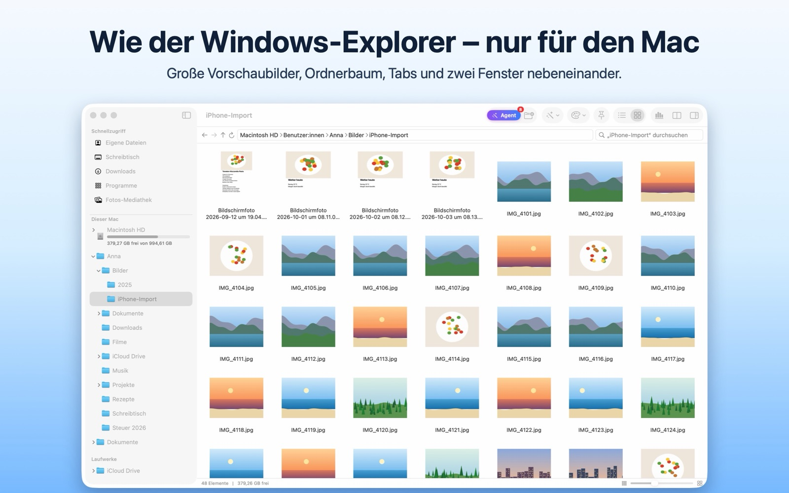

Foldair
FoldairWindows Explorer für den Mac
Nach dem Umstieg von Windows fehlt vielen am Mac der vertraute Explorer – der Finder funktioniert in vielen Kleinigkeiten anders.
So geht es im Finder
Microsoft bietet den Explorer nicht für macOS an. Vieles geht im Finder aber, nur an anderer Stelle:
- Ausschneiden: ⌘C und dann ⌥⌘V verschiebt die Datei.
- Ordnerbaum: In der Listenansicht (⌘2) klappst du Unterordner mit dem kleinen Pfeil auf. Einen festen Baum links wie im Explorer gibt es nicht.
- Pfad sehen: „Darstellung › Pfadleiste einblenden“ (⌥⌘P) zeigt den Pfad unten im Fenster. Einen Pfad eintippen kannst du mit ⇧⌘G („Gehe zum Ordner“).
- Umbenennen: Datei auswählen und die Eingabetaste drücken.
- Eine Ebene nach oben: ⌘↑.
So geht es mit Foldair
Foldair ist ein Datei-Explorer für den Mac, der sich bewusst wie der Windows Explorer bedienen lässt:
- Ordnerbaum in der Seitenleiste und Adressleiste oben, in die du einen Pfad tippen kannst.
- Ausschneiden mit ⌘X und Einfügen mit ⌘V, F2 zum Umbenennen.
- Tabs (⌘T) und zwei Ordner nebeneinander.
- Kopieren mit Fortschritt, Restzeit und Nachfrage, bevor etwas überschrieben wird.
- Ordnergrößen direkt in der Liste, Verbindungen zu NAS und Servern.
Foldair läuft neben dem Finder. Du musst nichts umstellen und kannst beide benutzen.

Foldair ausprobieren
14 Tage alles frei, ohne Anmeldung und ohne Zahlungsdaten. Danach bleibt der Explorer kostenlos.
📱 Du bist gerade am Handy. Foldair läuft auf dem Mac – schick dir den Link per AirDrop, Mail oder Notiz.
Für macOS 14 oder neuer · Apple-Chip und Intel · kein Abo
Häufige Fragen
Gibt es den Windows Explorer für macOS?
Nein, Microsoft bietet ihn nicht für den Mac an. Es gibt aber Dateimanager für den Mac, die ähnlich funktionieren, zum Beispiel Foldair.
Ersetzt Foldair den Finder?
Nein. Foldair läuft neben dem Finder. Der Finder bleibt unverändert, du nimmst Foldair für das, was du vom Explorer gewohnt bist.
Auf welchen Macs läuft Foldair?
Auf Macs mit macOS 14 oder neuer, mit Apple-Chip und mit Intel-Prozessor.